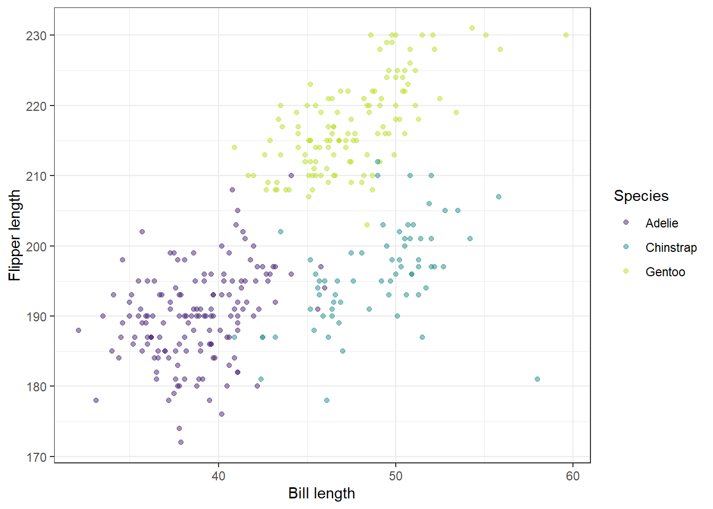
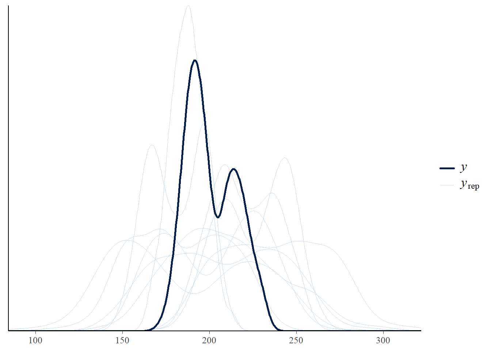
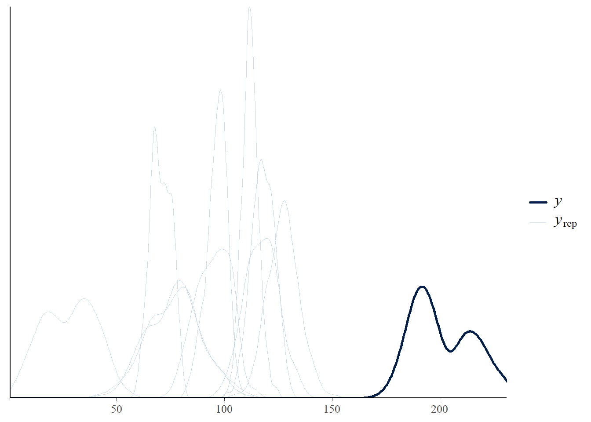
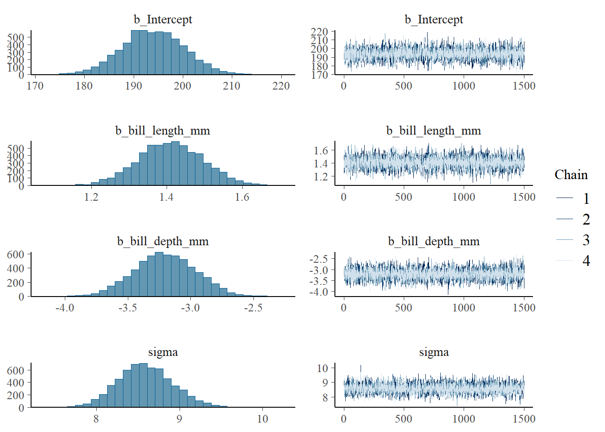
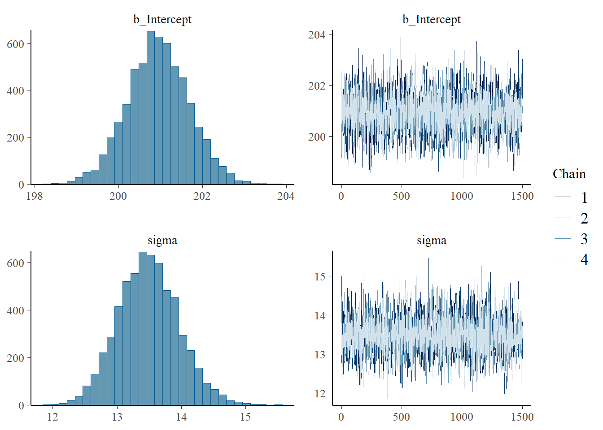
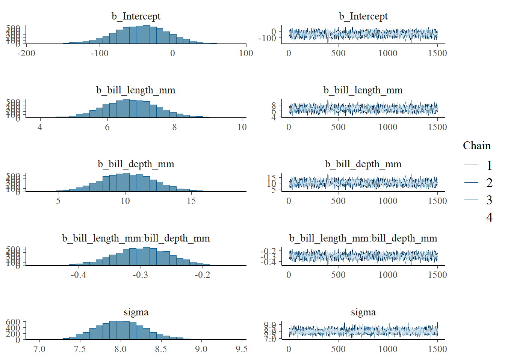
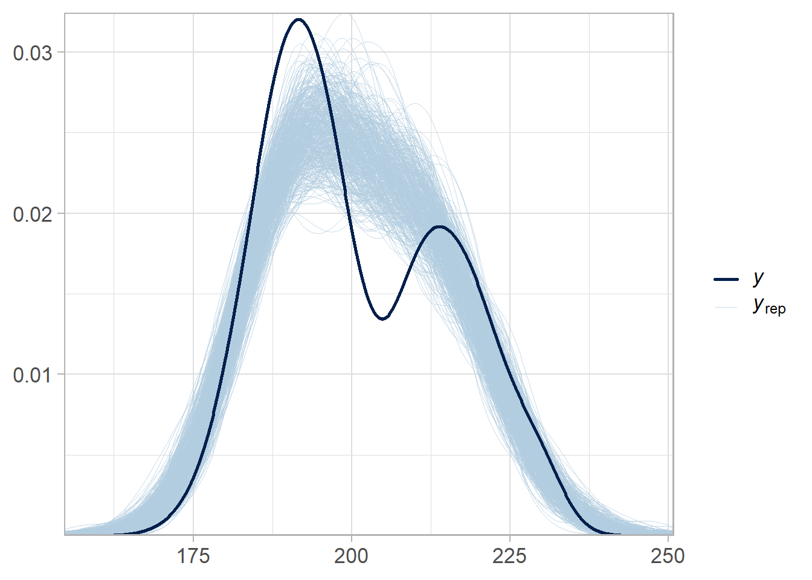
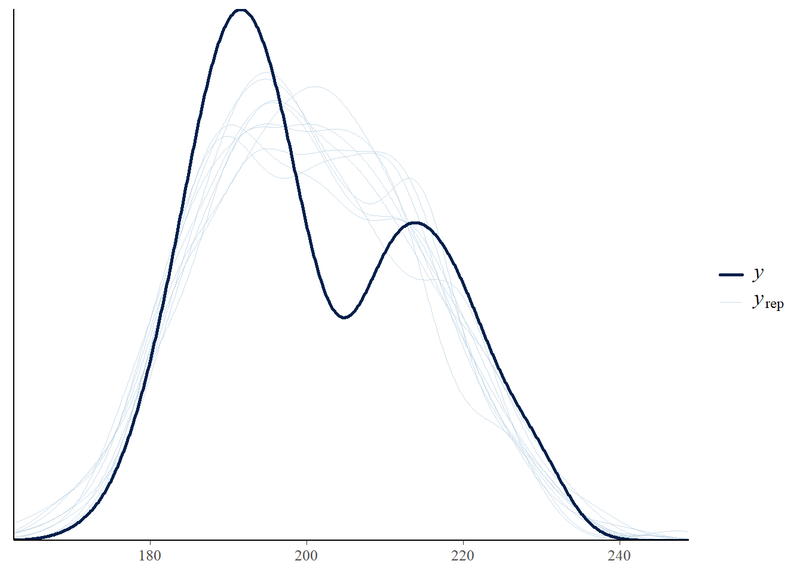

# packages
library(tidyverse) # Graphs with ggplot()
library(knitr) # Tables with kable()
library(brms) # Hierarchical Bayesian models
library(rstan) # Interface to Stan
# library(shinystan) # Model output graphs
library(bayesplot) # Model output graphs
# general setting
rstan_options(auto_write = TRUE)
options(contrasts = c("contr.equalprior_pairs", "contr.poly"))
set.seed(359)Assignment4
The data consist of several measurements of penguins of the Palmer archipelago in Antarctica.
library(palmerpenguins)
data(penguins)
ggplot(penguins,
aes(x = bill_length_mm, y = flipper_length_mm,
color = species))+
geom_point(alpha = .5)+
scale_color_viridis_d(begin = .1, end = .9)+
labs(x = "Bill length", y = "Flipper length", color = "Species")+
theme_bw()
# Remove missing values
penguins <- na.omit(penguins)
# Center numeric predictors in case you build models with interaction terms
penguins$bill_len_c <-
penguins$bill_length_mm - mean(penguins$bill_length_mm)
penguins$bill_dep_c <-
penguins$bill_depth_mm - mean(penguins$bill_depth_mm)Analyse the penguins dataset to investigate the hypothesis that flipper length is influenced by bill length and bill depth (at this point without considering interactions). Do so following a series of steps in the Bayesian workflow.
Exercise 1
Translate the hypothesis into a Bayesian mathematical model. What is the general structure of this model?
Answer: Suppose flipper length is \(y_{i}\), bill length is \(x_{1i}\) and bill depth is \(x_{2i}\).
\(Y_{i} \sim Normal(\mu_{i},\ \sigma ^2),\ \mu_{i} = \beta_{0} + \beta_{1}x_{1i} + \beta_{2}x_{2i}\).
We need priors on all \(\beta\) and \(\sigma\).
Exercise 2
Take a look at the default priors for the model, and define two sets of alternative priors.
default_prior(flipper_length_mm ~ 1 + bill_length_mm + bill_depth_mm,
data = penguins) prior class coef group resp dpar nlpar lb ub
(flat) b
(flat) b bill_depth_mm
(flat) b bill_length_mm
student_t(3, 197, 16.3) Intercept
student_t(3, 0, 16.3) sigma 0
tag source
default
(vectorized)
(vectorized)
default
defaultprior1 <- c(prior(normal(200, 20), class = Intercept),
prior(normal(0, 4), class = b, coef = bill_depth_mm),
prior(normal(0, 5), class = b, coef = bill_length_mm),
prior(normal(5, 2), class = sigma, lb = 0))
prior2 <- c(prior(normal(100, 20), class = Intercept),
prior(normal(0, 1), class = b, coef = bill_depth_mm),
prior(normal(0, 1), class = b, coef = bill_length_mm),
prior(normal(5, 5), class = sigma, lb = 0))Exercise 3
Conduct a small sensitivity analysis by comparing the prior predictive values of the model for the three sets of priors.
# default prior
file_path <- "brms_prior1.rds"
if (file.exists(file_path)) {
model.prior1 <- readRDS(file_path)
} else {
set.seed(359)
model.prior1 <- brm(flipper_length_mm ~
1 + bill_length_mm + bill_depth_mm,
data = penguins,
sample_prior = "only", iter = 2000, cores = 4)
saveRDS(model.prior1, file = file_path)
}
prior.predictions <- posterior_predict(model.prior1)
bayesplot::ppc_dens_overlay(prior.predictions[1,],
prior.predictions[1:500,], trim = T) +
theme_light(base_size = 16)No prior predictive values can be obtained when the priors are flat, because flat priors are “improper”, i.e. they violate the axioms of probability theory. This is a reason for choosing proper priors instead.
# defined set 1
file_path <- "brms_prior2.rds"
if (file.exists(file_path)) {
model.prior2 <- readRDS(file_path)
} else {
set.seed(359)
model.prior2 <- brm(flipper_length_mm ~
1 + bill_length_mm + bill_depth_mm,
data = penguins, prior = prior1,
sample_prior = "only", iter = 2000, cores = 4)
saveRDS(model.prior2, file = file_path)
}
pp_check(model.prior2)Using 10 posterior draws for ppc type 'dens_overlay' by default.
# defined set 2
file_path <- "brms_prior3.rds"
if (file.exists(file_path)) {
model.prior3 <- readRDS(file_path)
} else {
set.seed(359)
model.prior3 <- brm(flipper_length_mm ~
1 + bill_length_mm + bill_depth_mm,
data = penguins, prior = prior2,
sample_prior = "only", iter = 2000, cores = 4)
saveRDS(model.prior3, file = file_path)
}
pp_check(model.prior3)Using 10 posterior draws for ppc type 'dens_overlay' by default.
Prior1 is a more reasonable set.
Exercise 4
Estimate the model using the priors that was better in the prior predictive checks. Assess the convergence parameters and briefly interpret the model output.
file_path <- "brms_model1.rds"
if (file.exists(file_path)) {
model1 <- readRDS(file_path)
} else {
set.seed(359)
model1 <- brm(flipper_length_mm ~ 1 + bill_length_mm + bill_depth_mm,
data = penguins, prior = prior1,
iter = 2000, warmup = 500, silent = 2, refresh = 0)
saveRDS(model1, file = file_path)
}
model1 Family: gaussian
Links: mu = identity
Formula: flipper_length_mm ~ 1 + bill_length_mm + bill_depth_mm
Data: penguins (Number of observations: 333)
Draws: 4 chains, each with iter = 2000; warmup = 500; thin = 1;
total post-warmup draws = 6000
Regression Coefficients:
Estimate Est.Error l-95% CI u-95% CI Rhat Bulk_ESS Tail_ESS
Intercept 193.91 6.34 181.52 206.26 1.00 5772 4351
bill_length_mm 1.41 0.09 1.24 1.58 1.00 6379 4803
bill_depth_mm -3.20 0.25 -3.68 -2.73 1.00 6955 4802
Further Distributional Parameters:
Estimate Est.Error l-95% CI u-95% CI Rhat Bulk_ESS Tail_ESS
sigma 8.59 0.33 7.98 9.26 1.00 6583 4652
Draws were sampled using sampling(NUTS). For each parameter, Bulk_ESS
and Tail_ESS are effective sample size measures, and Rhat is the potential
scale reduction factor on split chains (at convergence, Rhat = 1).plot(model1)
Model diagnostics: The effective sample sizes for each parameter are above 1000, and the Gelmann-Rubin criterion R_hat is not larger than 1. The four chains have mixed well, showing a horizontal zig-zag with no discernable systematic drift upwards or downwards. The posterior distributions for each parameter are unimodal and relatively smooth; and they occupy limited regions of the parameter space rather than stretching across all or most possible parameter values. All this speaks in favour of the model having converged to a stable solution.
Interpretation: None of the credible intervals include the Null. Bill length seems to have a slightly positive effect, and bill depth a slightly negative effect on flipper length.
Exercise 5
Define two alternative models: An intercept-only model without predictors, and a more complex model that includes not just the main effects but also their interaction. Compare these models using Bayes factors, and briefly interpret the results.
# null model
prior_null <- c(prior(normal(200, 20), class = Intercept),
prior(normal(5, 2), class = sigma, lb = 0))
file_path <- "brms_model0.rds"
if (file.exists(file_path)) {
model0 <- readRDS(file_path)
} else {
set.seed(359)
model0 <- brm(flipper_length_mm ~ 1,
data = penguins, prior = prior_null,
iter = 2000, warmup = 500, silent = 2, refresh = 0)
saveRDS(model0, file = file_path)
}
model0 Family: gaussian
Links: mu = identity
Formula: flipper_length_mm ~ 1
Data: penguins (Number of observations: 333)
Draws: 4 chains, each with iter = 2000; warmup = 500; thin = 1;
total post-warmup draws = 6000
Regression Coefficients:
Estimate Est.Error l-95% CI u-95% CI Rhat Bulk_ESS Tail_ESS
Intercept 200.95 0.74 199.51 202.42 1.00 5647 3911
Further Distributional Parameters:
Estimate Est.Error l-95% CI u-95% CI Rhat Bulk_ESS Tail_ESS
sigma 13.49 0.47 12.59 14.45 1.00 5621 4087
Draws were sampled using sampling(NUTS). For each parameter, Bulk_ESS
and Tail_ESS are effective sample size measures, and Rhat is the potential
scale reduction factor on split chains (at convergence, Rhat = 1).plot(model0)
# full model with interaction
prior_full <- c(prior(normal(200, 20), class = Intercept),
prior(normal(0, 4), class = b, coef = bill_depth_mm),
prior(normal(0, 5), class = b, coef = bill_length_mm),
prior(normal(0, 5), class = b, coef = bill_length_mm:bill_depth_mm),
prior(normal(5, 2), class = sigma, lb = 0))
file_path <- "brms_model2.rds"
if (file.exists(file_path)) {
model2 <- readRDS(file_path)
} else {
set.seed(359)
model2 <- brm(flipper_length_mm ~ 1 + bill_length_mm * bill_depth_mm,
data = penguins, prior = prior_full,
iter = 2000, warmup = 500, silent = 2, refresh = 0)
saveRDS(model2, file = file_path)
}
model2 Family: gaussian
Links: mu = identity
Formula: flipper_length_mm ~ 1 + bill_length_mm * bill_depth_mm
Data: penguins (Number of observations: 333)
Draws: 4 chains, each with iter = 2000; warmup = 500; thin = 1;
total post-warmup draws = 6000
Regression Coefficients:
Estimate Est.Error l-95% CI u-95% CI Rhat Bulk_ESS
Intercept -44.26 37.49 -118.65 27.57 1.00 1792
bill_length_mm 6.70 0.82 5.12 8.35 1.00 1792
bill_depth_mm 10.21 2.09 6.17 14.48 1.00 1790
bill_length_mm:bill_depth_mm -0.30 0.05 -0.39 -0.21 1.00 1794
Tail_ESS
Intercept 2254
bill_length_mm 2128
bill_depth_mm 2147
bill_length_mm:bill_depth_mm 2175
Further Distributional Parameters:
Estimate Est.Error l-95% CI u-95% CI Rhat Bulk_ESS Tail_ESS
sigma 8.01 0.31 7.44 8.65 1.00 3432 3048
Draws were sampled using sampling(NUTS). For each parameter, Bulk_ESS
and Tail_ESS are effective sample size measures, and Rhat is the potential
scale reduction factor on split chains (at convergence, Rhat = 1).plot(model2)
# model comparison
bayes_factor(model1, model0)Iteration: 1
Iteration: 2
Iteration: 3
Iteration: 4
Iteration: 5
Iteration: 1
Iteration: 2
Iteration: 3
Iteration: 4
Iteration: 5Estimated Bayes factor in favor of model1 over model0: 8471967480286034089800486664440844406082208448224888284228020004066886.00000bayes_factor(model2, model1)Iteration: 1
Iteration: 2
Iteration: 3
Iteration: 4
Iteration: 5
Iteration: 1
Iteration: 2
Iteration: 3
Iteration: 4Estimated Bayes factor in favor of model2 over model1: 10954654.49433Interpretation: There is very strong evidence (BF > 100) that model2 can account for the pattern in the data better than model1, which in turn can account for the data better than model0.
Exercise 6
Conduct posterior predictive checks for the model that fairs best on the basis of the Bayes factor comparison.
posterior.predictions <- posterior_predict(model2)
bayesplot::ppc_dens_overlay(penguins$flipper_length_mm,
posterior.predictions[1:500,]) +
theme_light(base_size = 16)
# alternatively
pp_check(model2)Using 10 posterior draws for ppc type 'dens_overlay' by default.